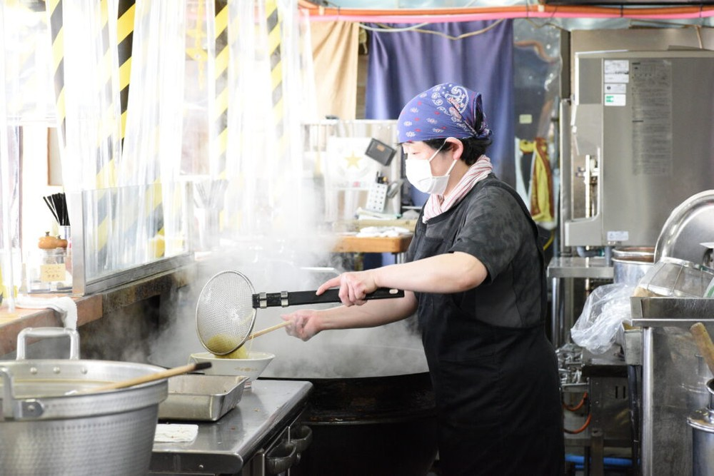

味も見た目も唯一無二！全国にファンの多い元祖店
全国にファン多数！燕背脂ラーメンの元祖〈杭州飯店〉
「中華そば」（900円）。
50台ある駐車場には県外ナンバーが多く止まり、70席の広い店内は常にお客さんでビッシリ。燕背脂ラーメンの総本山〈杭州飯店〉には、全国からファンが訪れます。店名に「飯店」とつくとおり、中華丼や焼きそば、ギョーザなど幅広いメニューをそろえていますが、ファンのお目当てはやはり「中華そば」です。
ザルですくった背脂をラーメンの上から小気味いいリズムで振りかける
スープを覆う背脂は国産豚にこだわり、外側の余分な脂は落とし、中心部分のみを使用しているのでスッキリした甘さが特徴。濃い褐色のスープは樽のまま仕入れた濃口の生じょうゆが味の要。キリッと角の立った塩味と背脂の甘みが見事にマッチします。全国から厳選した煮干しを使ったダシは香りが特徴で、スープを飲み込んだ後にふわっと心地いい香りの余韻を残してくれます。
うどんのような極太麺は毎朝打った麺をその日のうちに使用し、スープに負けない小麦の風味を楽しめます。ゆでる際に冷水を加えるので、麺の外側が締まり、独特のモチモチ感が生まれるそうです。「打ちたてじゃないとこの味は出せません。麺はその日のうちに使い切ります」と３代目主人の徐直幸さん。このこだわりが、半世紀以上ファンを魅了する理由です。
豪雪地帯の長岡で生まれた、体を温めるためのラーメン
生姜たっぷりスープが体を芯から温める〈青島食堂〉
青島ラーメン（800円）
新潟市と長岡市に複数店舗を構え、東京・秋葉原にも支店を持つ〈青島食堂〉。生姜醤油ラーメンの元祖として、その知名度を首都圏に広めた立役者。
ゲンコツとショウガを煮込んで取ったダシと、チャーシューを煮込んだしょうゆダレがスープの肝。コクがありながらもスッキリした味わいに仕上げたスープに、細麺が好相性です。チャーシューには、豚のウデ肉を使うことが多く、スープに溶け出した脂身の甘みも、味わいに深みを生み出しています。レンゲにすくったスープを口へ運ぶと、ほんのりスパイシーなショウガがふわりと香ります。「チャーシューメン」は麺が隠れるほどウデ肉のチャーシューがたっぷりで若者に大人気です。

JR宮内駅の正面、徒歩数十秒の場所にある「青島食堂
宮内駅前店」。雁木造りの雪よけ屋根で囲われた建物で、「青島」の看板が目印だ。取材に訪れたのは平日14時頃であったにも関わらず、お客さんが一向に途切れない人気ぶり。聞けば、前日にTBS系のテレビ番組『マツコの知らない世界』の“ご当地ラーメンの世界”で紹介されたとのこと。マツコ・デラックス氏絶賛の味を求め、多くのお客であふれ返っていた。
麺は少しウェーブがかかった自家製中細麺。やや加水率を高めにしているモチモチの食感で、喉ごしの良さが抜群。あっさりスープと油をまとった麺は、無限に食べられるのではないかと思うほど魅惑的だ。ちなみに、前日に放送された『マツコの知らない世界』の中で、マツコ・デラックスは「この麺が正義な気がする」と青島ラーメンを絶賛していた。
具材はチャーシュー、メンマ、ほうれん草、刻みネギ、海苔、ナルト。薄切りのチャーシューは赤身の部位が使われており、ほろっとやわらかく食べ応えがある。ラーメンのトッピングには珍しいほうれん草をのせるのが青島食堂流で、創業当時からの味を変わらずに提供していきたいとの思いから、トッピングの内容は60年間一切変えていない。
